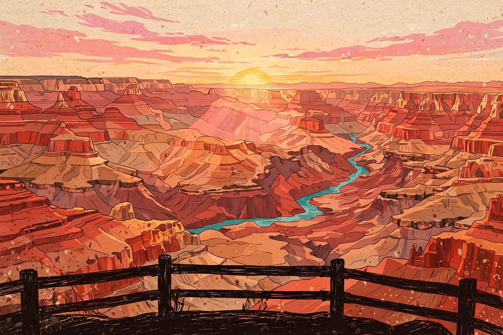
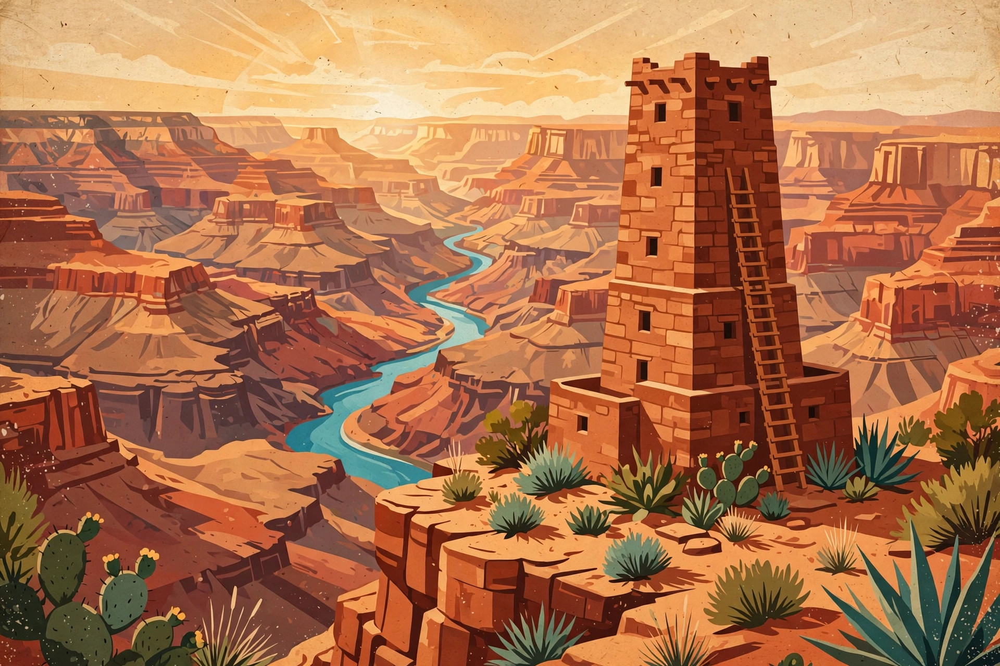

Hand-drawn-feeling travel maps for national parks
Every point of interest becomes a little illustration pinned on the map — must-sees big, hidden gems small. Browse the illustrated map for inspiration, then switch to the live map to see your real-time location and navigate with one tap.

Explore 8 must-see and 6 also-worth-a-stop spots on a warm hand-drawn map. Tap any illustration for its story.
Open the illustrated map →
The same illustrated markers on a real map — with your live GPS position and one-tap Google Maps navigation.
Open the live map →